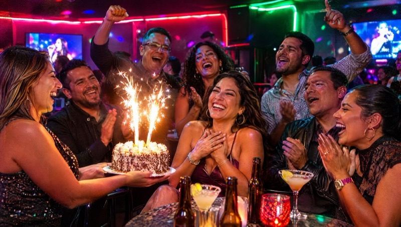
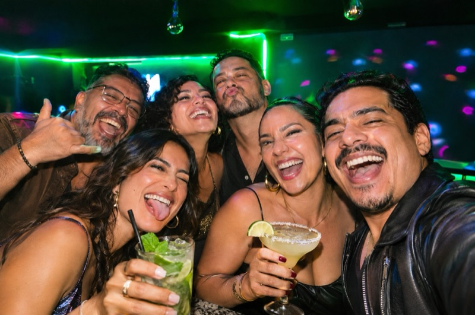
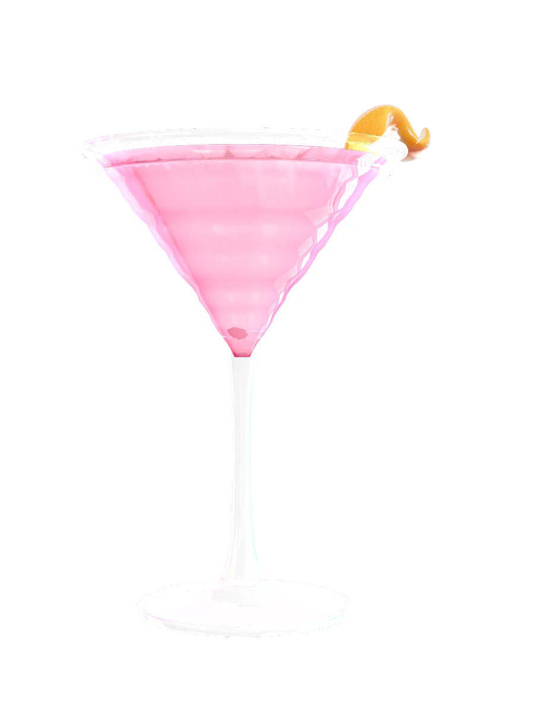

Cumpleaños
Te guardamos sitio para el grupo y el bar entero canta contigo. Cuéntanos qué tienes pensado y lo preparamos.
Cumpleaños · despedidas · grupos
¿Cumples años, te despides de soltero o se junta la cuadrilla? Avísanos y te guardamos sitio para que la noche salga redonda.
Qué celebramos

Te guardamos sitio para el grupo y el bar entero canta contigo. Cuéntanos qué tienes pensado y lo preparamos.
Micro para la novia o el novio, canciones dedicadas y una pista para darlo todo antes del gran día.
Reencuentros, quedadas de trabajo o del equipo. Mesa juntos, cubos para compartir y música para todos.
Rellena el formulario o mándanos un WhatsApp con el día y cuántos sois.
Te confirmamos por WhatsApp y te contamos lo que podemos preparar.
Llegáis, os sentáis juntos y la noche es vuestra. Del resto nos encargamos.

